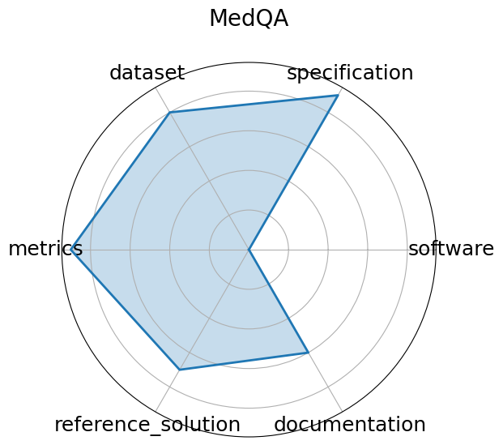

Edit: edit this entry
Date: 2020-09-28
Name: MedQA
Domain: Medical Question Answering
Focus: Medical board exam QA
Keywords: USMLE, diagnostic QA, medical knowledge, multilingual
Task Types: Multiple choice
Metrics: Accuracy
Models: Neural reader, Retrieval-based QA systems
Citation:
Di Jin, Eileen Pan, Nassim Oufattole, Wei-Hung Weng, Hanyi Fang, and Peter Szolovits. What disease does this patient have? a large-scale open domain question answering dataset from medical exams. 2020. URL: https://arxiv.org/abs/2009.13081, arXiv:2009.13081.
bibtex: ``` @misc{jin2020diseasedoespatienthave,
archiveprefix = {arXiv},
author = {Di Jin and Eileen Pan and Nassim Oufattole and Wei-Hung Weng and Hanyi Fang and Peter Szolovits},
eprint = {2009.13081},
primaryclass = {cs.CL},
title = {What Disease does this Patient Have? A Large-scale Open Domain Question Answering Dataset from Medical Exams},
url = {https://arxiv.org/abs/2009.13081},
year = {2020}
}```
Ratings:
Software:
Rating: 5
Reason: All code available on the github
Specification:
Rating: 3
Reason: Task is clearly defined as multiple-choice QA for medical board exams; input and output formats are explicit; task scope is rigorous and structured. System constraints not specified.
Dataset:
Rating: 4
Reason: Dataset is publicly available GitHub, paper, Hugging Face , well-structured. However, versioning and metadata could be more standardized to fully meet FAIR criteria.
Metrics:
Rating: 5
Reason: Uses clear, quantitative metric accuracy , standard for multiple-choice benchmarks; easily comparable across models.
Reference Solution:
Rating: 0
Reason: No reference solution mentioned.
Documentation:
Rating: 4
Reason: Paper is available. Evaluation criteria are not mentioned.
Average Rating: 3.5
Radar Plot: 